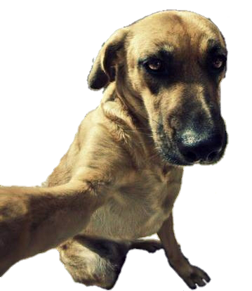

<p style="text-align: center">
    
</p>
<script>
    let dog = document.querySelector('img');
    let angle = Math.PI / 2;
    function animate(time, last_time){
        if(last_time != null){
            angle += (time - last_time) * 0.001;
        }
        dog.style.top = (Math.sin(angle) * 100) + 'px';
        dog.style.left = (Math.cos(angle) * 500) + 'px';
        requestAnimationFrame(newTime => animate(newTime, time));
    }
    requestAnimationFrame(animate);
</script>